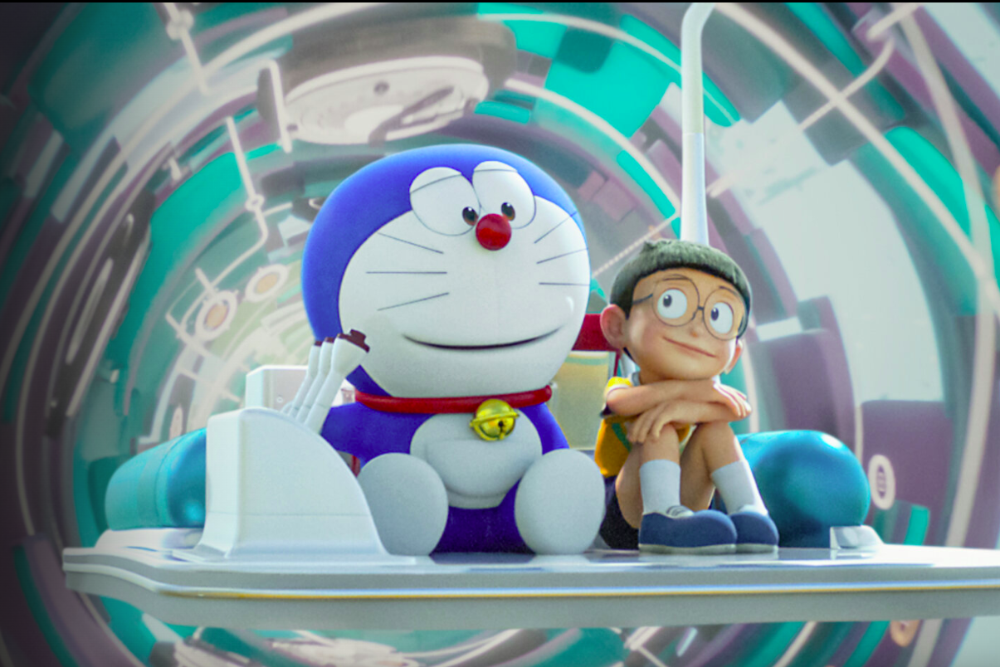

Soundtrack yang digunakan pada Stand By Me Doraemon 2 [Niji-Masaki Suda]
Video trailer Stand By Me Doraemon 2
Nobita menuju masa depan demi menunjukkan istrinya kepada neneknya, tetapi Nobita dewasa malah kabur dari pernikahannya.
Bisakah Nobita menjadi suami yang baik bagi Shizuka? Tuliskan jawaban anda pada form ketika anda menekan tombol Survey dibawah.
